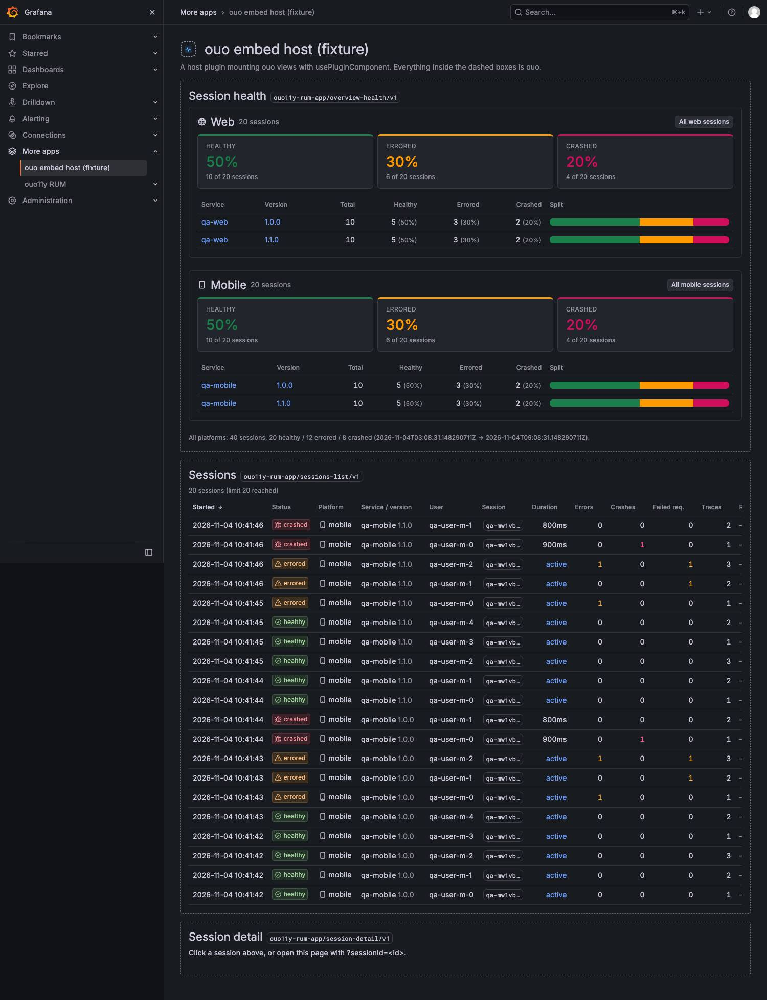
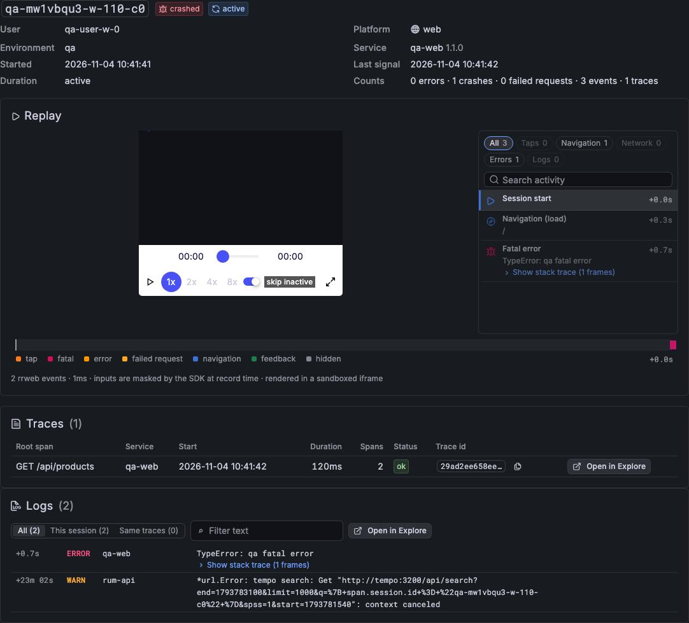
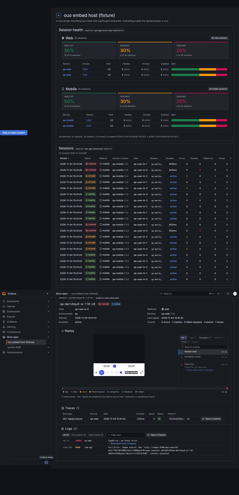

2026-11-04 · PR #165 · ADR-0019 · Grafana 13.2.5, compose project r5embed with compose.embed-host.yaml, data from deploy/scripts/e2e.sh (40 sessions, one rrweb replay)
| Check | Result |
|---|---|
overview-health/v1 renders in the host page (web and mobile tiles, version tables) | pass |
sessions-list/v1 renders with limit: 20 from props | pass: 20 rows, "limit 20 reached" |
Only one page header, the host's (PageShell drops ouo's chrome) | pass: ["ouo embed host (fixture)"] |
Row click reaches the host's onSessionClick, which mounts session-detail/v1 | pass: ?sessionId=qa-mw1vbqu3-m-110-c1 |
session-detail/v1 for the rrweb session: header, rrweb player iframe, activity list, traces, logs | pass |
| Every rum-api call goes through ouo's own proxy route | pass: 12/12 under /api/plugin-proxy/ouo11y-rum-app/rum/ |
| No console errors | pass |
Grafana backend sees both declarations (/api/frontend/settings): ouo's extensions.exposedComponents and the host's dependencies.extensions.exposedComponents | pass |

overview-health/v1 and sessions-list/v1.
session-detail/v1 for qa-mw1vbqu3-w-110-c0: the rrweb player and activity list, traces, logs. The e2e replay holds only 2 rrweb events, so the player frame is empty by design of the fixture data.
The Mac ran about 150 containers (load average around 900) during the run. Grafana took more than 15 minutes to start, and Loki needed retries before rum-api answered. The e2e scenario's own assertions were cut short by the alarm after the data was sent. None of this involves the plugin.